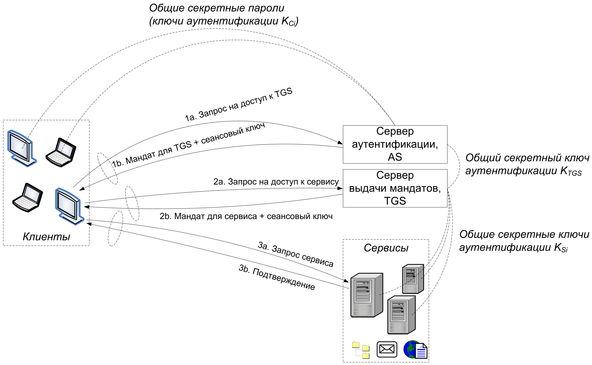

Система аутентификации и распределения ключей Kerberos основана на протоколе Нидхема—Шрёдера (см. разделы[section-protocols-needham-schroeder, section-protocols-kerberos]). Самые известные реализации протокола Kerberos включены в Microsoft Active Directory и ПО Kerberos с открытым исходным кодом для Unix.
Протокол предназначен для решения задачи аутентификации и распределения ключей в рамках локальной сети, в которой есть группа пользователей, имеющих доступ к набору сервисов, для которых требуется обеспечить единую аутентификацию. Протокол Kerberos использует только симметричное шифрование. Секретный ключ используется для взаимной аутентификации.
Естественно, что в глобальной сети Интернет невозможно секретно создать и распределить пары секретных ключей, поэтому Kerberos построен для (виртуальной) локальной сети.
В протоколе используются 4 типа субъектов:
пользователи системы $C_i$;
сервисы $S_i$, доступ к которым имеют пользователи;
сервер аутентификации AS (англ. Authentication Server), который производит аутентификацию пользователей по паролям и/или смарт-картам только один раз и выдаёт секретные сеансовые ключи для дальнейшей аутентификации;
сервер выдачи мандатов TGS (англ. Ticket Granting Server) для аутентификации доступа к запрашиваемым сервисам, аутентификация выполняется по сеансовым ключам, выданным сервером AS.
Для работы протокола требуется заранее распределить следующие секретные симметричные ключи для взаимной аутентификации.
Ключи $K_{C_i}$ между пользователем $i$ и сервером AS. Как правило, ключом служит обычный пароль, точнее, результат хеширования пароля. Может быть использована и смарт-карта.
Ключ $K_{TGS}$ между серверами AS и TGS.
Ключи $K_{S_i}$ между сервисами $S_i$ и сервером TGS.
Рис. 13.1 — Схема аутентификации и распределения ключей Kerberos
На рис.13.1 представлена схема протокола, состоящая из 6 шагов.
Введём обозначения для протокола между пользователем $C$ с ключом $K_C$ и сервисом $S$ с ключом $K_S$:
$t_i, \tilde{t}_i$ – запрашиваемые и выданные границы времени действия сеансовых ключей аутентификации;
$ts_i$ – метка текущего времени (англ. timestamp);
$N_i$ – одноразовая метка (англ. nonce), псевдослучайное число для защиты от атак воспроизведения сообщений;
$K_{C,TGS}, K_{C,S}$ – выданные сеансовые ключи аутентификации пользователя и сервера TGS, пользователя и сервиса $S$ соответственно;
$T_{TGS} = E_{K_{TGS}}(K_{C,TGS} ~\|~ ID_C ~\|~ \tilde{t}_1)$ – мандат (англ. ticket) для TGS, который пользователь расшифровать не может;
$T_{S} = E_{K_S}(K_{C,S} ~\|~ ID_C ~\|~ \tilde{t}_2)$ – мандат для сервиса $S$, который пользователь расшифровать не может;
$K_1, K_2$ – обмен информацией для генерирования общего секретного симметричного ключа дальнейшей коммуникации, например по протоколу Диффи—Хеллмана.
Схема протокола следующая.
Первичная аутентификация пользователя по паролю, получение сеансового ключа $K_{C,TGS}$ для дальнейшей аутентификации. Это действие выполняется один раз для каждого пользователя, чтобы уменьшить риск компрометации пароля.
Аутентификация сеансовым ключом $K_{C,TGS}$ на сервере TGS для запроса доступа к сервису выполняется один раз для каждого сервиса. Получение другого сеансового ключа аутентификации $K_{C,S}$.
Аутентификация и проверка целостности достигаются сравнением идентификаторов, одноразовых меток и меток времени внутри зашифрованных сообщений после расшифрования с их действительными значениями.
Некоторым недостатком схемы является необходимость синхронизации часов между субъектами сети.